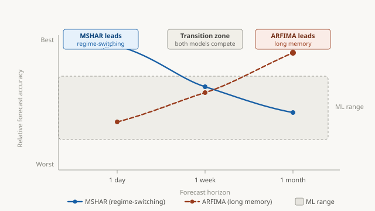
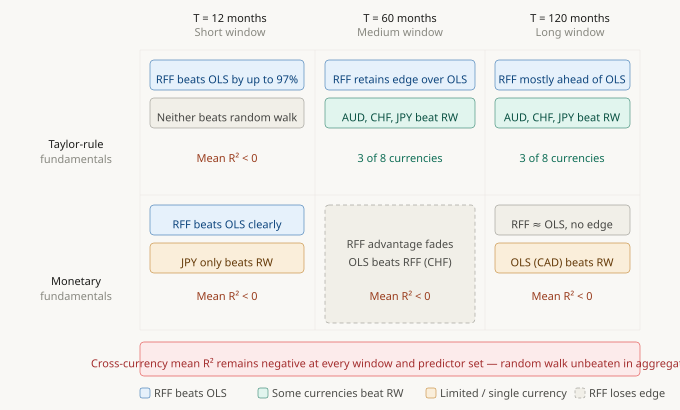

Rehim Kilic
Principal Economist · Federal Reserve Board of Governors
I am an economist specializing in econometrics, machine learning, financial econometrics, and time series analysis, with applications to economic policy, financial stability, and risk management. My research develops and applies advanced quantitative methods to problems in exchange rates, volatility modeling, forecasting, and financial markets.
At the Federal Reserve Board, I conduct quantitative policy analysis on financial market risks and their implications for financial stability. Prior to joining the Board, I held positions at Amazon, Barclays Capital, Oliver Wyman, the Office of the Comptroller of the Currency, and the Federal Reserve Bank of Atlanta, and I have been on the faculty at Georgia Tech, Koç University, Emory University, and the University of Maryland.
I received my PhD in Economics from Michigan State University, with fields in Econometrics and International Economics.
Publications
-
“Robust Inference for Predictability in Smooth Transition Predictive Regressions”
-
“Tests for Linearity in STAR Models: SupWald and LM-type Tests”
-
“Regime-Dependent Exchange Rate Pass-Through to Import Prices”
-
“Long Run Equilibrium and Short Run Dynamics Between Risk Exposure and Highway Safety”
-
“Testing for Co-integration and Nonlinear Adjustment in a Smooth Transition Error Correction Model”
-
“Long Memory and Nonlinearity in Conditional Variances: A Smooth Transition FIGARCH Model”
-
“Investment Intensity of Currencies and the Random Walk Hypothesis: Cross-Currency Evidence”
-
“A Testing Procedure for a Linear Unit Root Against Stationary ESTAR Process”
-
“A Conditional Variance Tale from an Emerging Economy’s Freely Floating Exchange Rate”
-
“Nonlinearity and Persistence in PPP: Does Controlling for Nonlinearity Solve the PPP Puzzle?”
-
“Further on the Nonlinearity, Persistence, and Integration Properties of Real Exchange Rates”
-
“Conditional Volatility and Distribution of Exchange Rates: GARCH and FIGARCH Models with NIG Distribution”
-
“Do Asymmetric and Nonlinear Adjustments Explain the Forward Premium Anomaly?”
-
“Linearity Tests and Stationarity”
-
“On the Long Memory Properties of Emerging Capital Markets: Evidence from Istanbul Stock Exchange”
Working Papers
-
“Linear and Nonlinear Econometric Models Against Machine Learning Models: Realized Volatility Prediction” Under Review
This paper asks whether machine-learning methods can outperform the best traditional statistical models for forecasting stock market volatility. Using S&P 500 data from 2006 to 2025—spanning the Global Financial Crisis, COVID-19, and the post-pandemic inflation episode—it compares a broad set of approaches including gradient-boosted trees (XGBoost), deep neural networks, and recurrent networks (LSTM, GRU) against time-series econometric models specifically designed for volatility.
The main finding is horizon-dependent. At short horizons (one day ahead), a Markov-switching model that allows the volatility process to shift between high- and low-risk regimes consistently outperforms all machine-learning alternatives. At longer horizons (one month ahead), a long-memory model (ARFIMA) that captures the slow, persistent decay of volatility shocks becomes the clear leader. Machine-learning models, despite their flexibility, do not dominate at any horizon. These conclusions hold for individual stocks (Apple, JPMorgan, Nvidia, and others) and are robust to more frequent model updating, alternative loss functions, and different target transformations.
The broader implication is that adding computational complexity does not automatically improve forecasts. What matters is whether a model’s structure matches the actual dynamics of the data. For volatility forecasting, well-designed econometric models that explicitly encode regime-switching and long memory remain highly competitive—and often superior—to more flexible machine-learning alternatives.

Schematic ranking of model accuracy by forecast horizon. MSHAR (regime-switching) dominates at the one-day horizon; ARFIMA (long memory) dominates at the one-month horizon. Machine-learning models remain competitive but do not displace the leading econometric specifications at any horizon. -
“Virtue or Mirage? Complexity in Exchange Rate Prediction” Under Review
This paper asks whether the latest generation of high-dimensional machine-learning models can finally crack the long-standing puzzle of exchange rate forecasting. Since Meese and Rogoff (1983), researchers have known that even sophisticated structural models typically cannot beat a naive random walk forecast. The paper tests whether Ridge regression with Random Fourier Features — a method recently shown to work well in stock return prediction — can change that verdict for eight major USD currency pairs.
The answer is a qualified no. At short training windows, the machine-learning model dramatically outperforms simple linear regression, but this reflects its ability to stay close to the random walk through heavy regularization rather than genuine predictive signal. At longer windows, Taylor-rule fundamentals reveal modest predictive content for a handful of currencies — the Australian dollar, Swiss franc, and Japanese yen — but this is currency-specific rather than systematic. The cross-currency average out-of-sample R² remains negative at every specification: the random walk is never beaten in aggregate. The paper also shows that apparent gains in trading strategies largely reflect drift-capture artifacts that vanish once the model includes an intercept.
The deeper finding is that the failure of complexity in FX is structural, not a matter of miscalibration. The signal strength in monthly exchange rate fundamentals is estimated to be orders of magnitude too weak for high-dimensional complexity to exploit — a fundamental difference from equity markets. The broader lesson is that predictive success depends not on computational power but on the richness of the available signal, and in FX that signal remains elusive.

Summary of out-of-sample results across predictor sets and training windows. While Ridge–RFF consistently outperforms OLS, especially at short windows, the cross-currency mean out-of-sample R² remains negative throughout. The random walk benchmark is unbeaten at the panel level in every configuration. -
“Identifying Conditions for Time Series Forecasting Performances of ML Models: A Monte Carlo Investigation” In Preparation
-
“Margin Requirements and Interest Rate Sensitivity of CCP Balances at the Fed” In Preparation
-
“Uncovered Interest Rate, Overshooting, and Predictability Reversal Puzzles in an Emerging Economy” In Preparation
-
“Threshold Effects in Margin Dynamics” In Preparation
-
“LLMs as FOMC Members: How LLMs Fail or Succeed in Forecasting Individual Projections” Work in Progress
-
“Machine Learning Complexity and Market Volatility Predictability” Work in Progress
-
“LSTM Inferred Economic and Financial States and Realized Financial Market Volatility” Work in Progress
-
“How Good Are Time Series LLMs in Predicting Economic and Financial Time Series in Short and Long Horizons?” Work in Progress
Policy Work
-
2019–presentQuantitative policy analysis on financial market risks and financial stability at the Federal Reserve Board of Governors, including contributions to the Fed’s Financial Stability Reports. Led and contributed to large-scale policy projects within the Federal Reserve System, collaborating with central banks, the BIS, and IOSCO on regulatory frameworks and market stability.
-
2017–2019Market risk analytics at Barclays Capital: end-to-end development and deployment of models for market risk, stress testing, forecasting, and stress scenario design.
-
2015–2017Managed engagements at Oliver Wyman on stress testing, model risk management, model development and validation, market and trading-book risk, and fraud detection. Led CCAR submissions for large financial institutions across the USA, Canada, and UK.
-
2014–2015Research and policy analysis at the Office of the Comptroller of the Currency, supporting supervision of U.S. G-SIBs and contributing to initiatives on model risk management, Basel 2.5/3.0 implementation, and stress testing.
-
2011–2014Research and policy analysis at the Federal Reserve Bank of Atlanta, supporting system-wide supervision across credit, liquidity, market, and operational risks, and contributing to CCAR and DFAST examinations and loan loss projection model development.
Connect on LinkedIn for professional updates, or visit the Federal Reserve Board research profile for working papers and policy notes.
Teaching
Courses taught at Georgia Tech, Koç University, Emory University, and the University of Maryland, at undergraduate and graduate levels.
Econometrics & Statistics
- Econometrics (undergraduate and graduate)
- Applied Econometrics: Panel Data, Machine Learning, and Time Series
- Time Series Econometrics
- Financial Econometrics
- Probability and Statistics
- Discrete Choice Models
- Forecasting for Business and Economics
Finance & Economics
- International Finance
- Macroeconomics
- Microeconomics
- Global Financial Markets
- International Trade
Institutions
- Georgia Institute of Technology, School of Economics (2002–2010)
- Koç University, Department of Economics (2010–2011)
- Emory University, Department of Economics (2014, 2015)
- University of Maryland, School of Public Policy (2023)